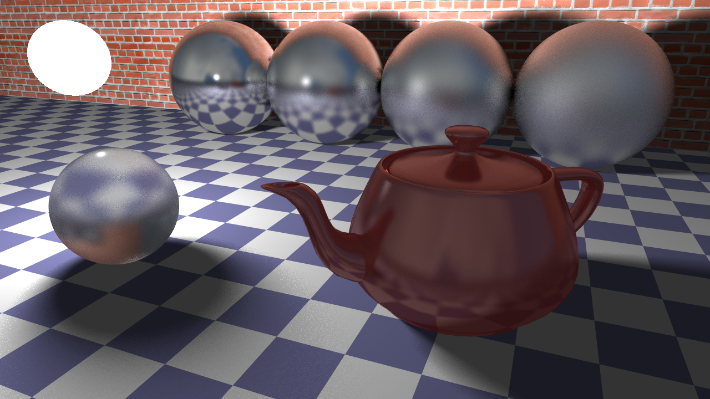

This is a CPU-based implementation of a fully featured ray tracer, including Photon mapping, monte-carlo global illumination and multi-sampled soft shadows

Roles:
Programmer
Team Size:
Solo
Platforms:
PC
Engine/Language:
C++
Development
I developed a CPU-based ray tracer in C++ from scratch, combining polished visual output with a deep implementation of core rendering algorithms. The renderer supports textured geometry, Blinn-Phong shading, reflections, refractions, soft shadows, anti-aliasing, depth of field, Monte Carlo global illumination, and photon mapping, showcasing both visual realism and a broad command of classical and physically inspired rendering techniques. Its architecture includes a BVH acceleration structure, Monte Carlo sampling, photon mapping, and multithreaded rendering, grounded in the linear algebra behind coordinate transformations, ray-object intersections, surface shading, and light transport. This project reflects my ability to translate computer graphics theory into efficient, technically rigorous C++ systems that produce high-quality rendered images.